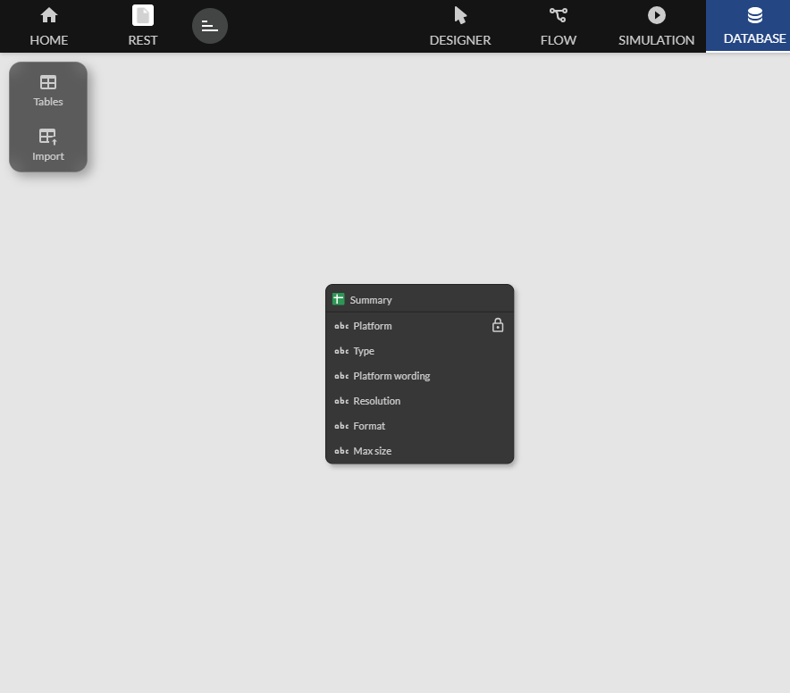
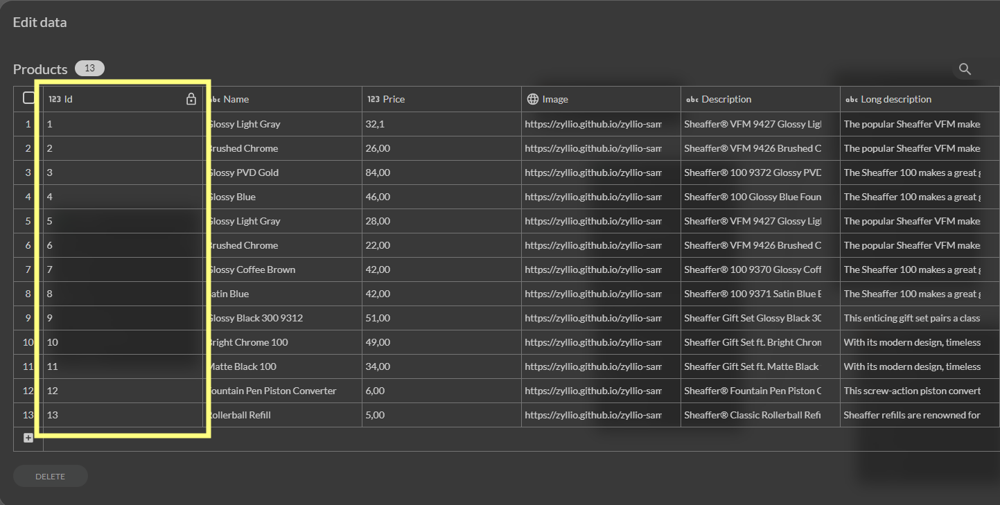

Google Sheets
Zyllio permet de connecter et d'exploiter des données à partir de Google Sheets. Grâce à cette fonctionnalité, vous pouvez récupérer et utiliser des feuilles de calcul directement dans votre application.
Connexion à Google Sheets
Ouvrez le Studio Zyllio, rendez-vous dans l'onglet Settings dans le menu de gauche, sélectionnez l'option Google Sheets et activez le bouton Enable. Cliquez ensuite sur le bouton Connect. Cela ouvrira une fenêtre vous permettant de sélectionner votre compte Google.
Choisissez le compte Google que vous souhaitez utiliser pour accéder à vos Google Sheets. Une fois connecté, vous verrez un message de statut indiquant que la connexion est réussie : Connected.
Accès à Google Sheets
Depuis l'onglet Database, cliquez sur le bouton Import pour afficher les sources de données externes, puis sélectionnez Sheets.

La fenêtre suivante permet de sélectionner le document Google Sheets puis la ou les feuilles que vous souhaitez importer.

Une fois importée, vous obtenez une nouvelle table.

Points clés
Les Google Sheets ne contiennent pas de mécanismes pour identifier les lignes de manière unique. Pour pouvoir effectuer des opérations de modifications, il est nécessaire que la première colonne définisse un identifiant unique. Si cela n'est pas le cas, un avertissement s'affichera.
La première colonne doit définir de manière unique chaque ligne. L'information peut être un numéro unique souvent employé ou bien n'importe quel texte tant que l'unicité est respectée.
Exemple :

Formats
Le format des date doit être YYYY-MM-DD
Le format des nombres décimaux doit être le format Text au niveau de la colonne Sheet et utiliser le point décimal
Les colonnes Google Sheets avec formules ne doivent pas être utilisée. Elle ne posent aucun problème à la lecture mais risquent d'être écrasées lors des mises à jour (Update-Row)
Limitations
Zyllio limite l'étendue des Google Sheets à 52 colonnes (de A-Z et AA-AZ)
Synchronisation de structure
Lorsque vous effectuez des changements de structure dans vos Google Sheets, par exemple un ajout de colonnes, ces changements n'apparaissent dans Zyllio. Pour synchroniser ces changements, cliquer sur le bouton Refresh Structure. Une fois le processus de synchronisation lancé, Zyllio va ajouter et supprimer les champs en fonction des changements.
Zyllio ne modifie pas la structure des colonnes dans votre Google Sheets

Synchronisation de données
Zyllio met en place un cache de données pour améliorer les performances d'accès aux Google Sheets. Ainsi, des modifications depuis Google Sheets ou une automatisation externe risque de ne pas être visible immédiatement depuis Zyllio. Un délai de 1 mn maximum peut être nécessaire.
Pour forcer le rafraichissement, cliquez sur le bouton Refresh Data.